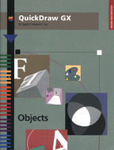

Legacy Document
Important: The information in this document is obsolete and should not be used for new development.
Important: The information in this document is obsolete and should not be used for new development.
QuickDraw GX Objects
Inside Macintosh: QuickDraw GX Objects gets you started with QuickDraw GX, the object-based graphics programming environment. Read this book before any others in the QuickDraw GX suite to learn how to create powerful and flexible graphics and text-handling applications.Inside Macintosh: QuickDraw GX Objects starts with an overall introduction to QuickDraw GX and its objects, and then describes how you can create and draw graphical elements using the fundamental object types: shape objects, style objects, ink objects, color-related objects, transform objects, view-related objects, tag objects. After reading this book, consult the following books for specific applications of QuickDraw GX objects:
For information on the QuickDraw GX programming environment and several supporting utilities, see Inside Macintosh: QuickDraw GX Environment and Utilities. For information on creating printing extensions and printer drivers that work with QuickDraw GX, see Inside Macintosh: QuickDraw GX Printing Extensions and Drivers.
- Inside Macintosh: QuickDraw GX Graphics for graphics programming
- Inside Macintosh: QuickDraw GX Typography for text handling
- Inside Macintosh: QuickDraw GX Printing for printing graphics and text
Availability Click below to obtain Inside Macintosh: QuickDraw GX Objects in any of the following formats.
Acrobat (6212K)